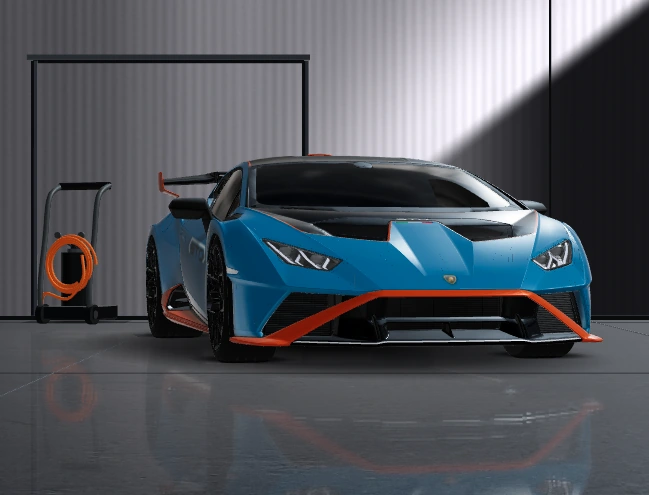

Lamborghini
Huracán STO
- Engine
- 5.2 L V10
- Power
- 640 CV
- 0–100 km/h
- 3.0 s

Garage view
Component explanations are available in the technical guide.
Lamborghini

Garage view
Component explanations are available in the technical guide.